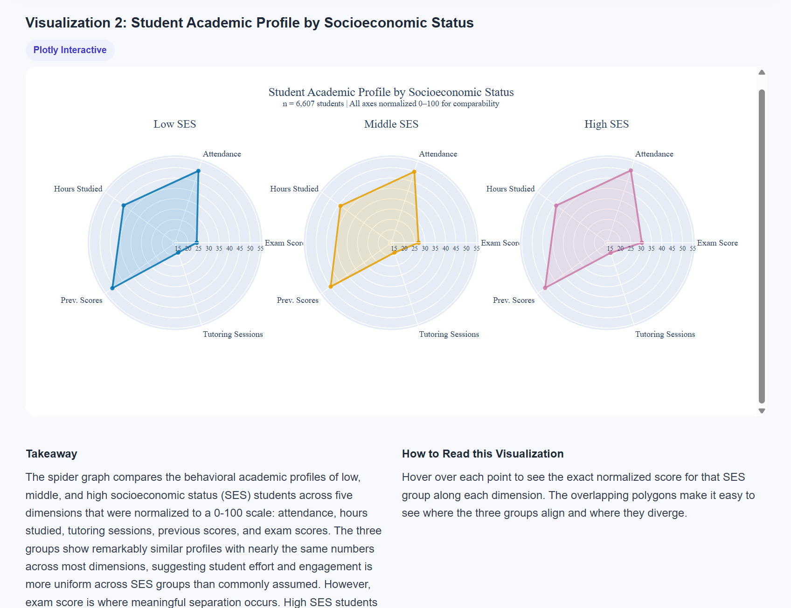

When I first decided to major in computer science, I had a pretty specific idea of what my future career would look like. I pictured myself working as a software engineer, spending most of my time writing code and developing applications. At the time, I didn't really know what other opportunities existed for someone with a technical background.
But as I've gotten further into college and gained more professional experience, I've realized that my interests don't necessarily fit into that traditional picture. I still enjoy technical work. I like solving problems, learning new tools, and figuring out how to use technology to make something better. What I've discovered, though, is that I especially enjoy doing those things in environments where I'm working with other people.
Through my co-ops and academic projects, I've learned how much I value collaborating across teams, communicating ideas, and seeing how my work contributes to something larger than the task directly in front of me. Rather than moving away from computer science, I feel like I'm starting to understand how I want to use it.
Finding My Own Version of Technical Work
One of the things I've learned throughout college is that enjoying computer science doesn't necessarily mean enjoying every type of work that falls under it. For a long time, I thought that because I was studying computer science, I should naturally want to become a software engineer. It felt like the most obvious path, and I hadn't really considered what else I might enjoy.
Over time, I've become more comfortable recognizing what I like and what I don't. I still prefer roles that challenge me technically, but I've realized that I don't necessarily want to spend my entire workday focused on coding independently. I enjoy being part of a team, collaborating with people from different areas of a business, and using technical skills to solve problems that affect more than one department.
My co-op experiences have helped me understand that about myself. Whether I'm discussing a problem with coworkers, figuring out what information a team needs, or using data to support a decision, I enjoy the combination of technical thinking and communication.
It's made me realize there isn't just one way to be a technical person. And I think that's important for students who feel like they're supposed to follow a particular career path because of their major.
When Data Becomes a Story
One academic experience that reinforced my interest in combining technical work with communication was my DS4200 data visualization final project. My group and I created a website exploring how socioeconomic factors relate to academic performance among students.
We worked with a dataset that included exam scores alongside information about family income, parental involvement, access to educational resources, and study habits. Our goal was to explore relationships between these variables and communicate our findings through interactive visualizations.
What I enjoyed most was getting to experience the entire process rather than focusing on one technical task. We started by cleaning and preparing the data so we could explore the questions we were interested in. From there, we built visualizations to help readers identify patterns and compare different groups of students.
But the project didn't end once the charts were working. We had to decide which visuals were useful, how to organize them on the website, and how to explain what they showed to someone unfamiliar with the dataset. That was one of my favorite parts.
For example, we explored how students with different socioeconomic backgrounds could have similar study habits while still showing differences in academic performance. Visualizing those relationships helped us communicate a more complete picture, while also reminding us that correlation alone doesn't explain why a difference exists.
By the time we finished, we'd brought our analysis, visualizations, and explanations together into an interactive website. Seeing everything come together was rewarding because I knew how much work had gone into each step, from cleaning the data to designing the final page.
That project reminded me that technical work can also be creative. It wasn't just about making a chart look nice or writing code that ran correctly. It was about turning a large amount of information into something another person could explore and understand.

Seeing Data From a Different Perspective
Another experience that has shaped my interests has been my co-op at New Balance. After working in operations analytics at Wayfair, I was excited to see how data could be used in a different industry and business model.
At Wayfair, much of my work focused on suppliers, shipping performance, and operational processes in a dropship environment. At New Balance, I've gotten to learn more about merchandising and planning at a brand that develops and sells its own products. Even though both companies use analytics to make decisions, the questions their teams are trying to answer can look very different.
One of my main projects at New Balance has involved building a Power BI dashboard for a team to compare forecasts with actual results. I've enjoyed that the work feels more front-end focused: I'm thinking not only about the data but also about how to organize it so the people using the dashboard can understand what they're seeing.
Learning Power BI has also been valuable because it's a tool used widely in business analytics. It's been exciting to develop a new technical skill while seeing how it connects to the goals and milestones of a real business.
Beyond the dashboard itself, I've learned more about how the company operates and how teams use data to evaluate plans and make adjustments. It's made me appreciate that an analysis becomes more useful when you understand the decisions people are trying to make with it.
New Balance has definitely changed how I think about life after graduation. But rather than making me settle on one specific role, it's made me even more open to exploring what else is out there.
The Road Ahead
As I get closer to graduation, I've started thinking more seriously about what I want my career to look like. I have a better understanding of my interests than I did when I first started college, but I still don't have one specific role or industry that I'm set on pursuing. And I've realized that I'm okay with that.
I've discovered that I enjoy working at the intersection of technology and business. I like using my technical background to solve problems, but I also enjoy working with different teams, understanding what people need, and helping turn information into action.
Because of that, I've become interested in exploring product management, project management, and consulting alongside analytics. Those paths appeal to me because they involve collaborating with different people, approaching problems from multiple perspectives, and helping ideas move forward.
I'm also keeping an open mind about industries. Before my first co-op, I never imagined myself working in supply chain operations, and I hadn't seriously considered merchandising and planning either. Yet both experiences taught me things I wouldn't have learned if I'd only pursued roles that sounded familiar.
I still value the technical foundation I've built through computer science, and I know those skills will be useful wherever I end up. But I've learned that I don't have to limit myself to a traditional technical role because of what I chose to study.
I may not know exactly what my career will look like five or ten years from now, but I'm becoming more comfortable with the idea that I don't need to. For now, I want to keep learning, challenging myself, and taking opportunities that help me grow, even if they lead somewhere I hadn't planned.
And I think that's what being off the beaten path is really about.
There isn't just one way to build a career with a computer science degree.